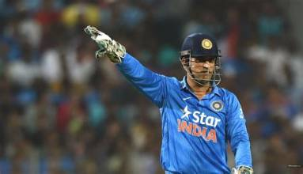

Mahendra Singh Dhoni ( born 7 July 1981) is an Indian former cricketer who played as right-handed batter and a wicket-keeper. Widely regarded as one of the most prolific wicket-keeper batsmen and captains, he represented the Indian cricket team and was the captain of the team in limited overs formats from 2007 to 2017 and in Test cricket from 2008 to 2014.
